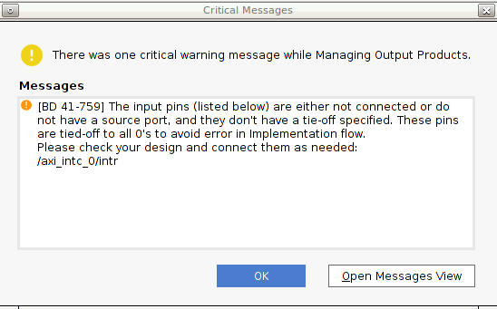

Versal Custom Platform Creation Tutorial |
Step 1: Hardware Settings for Vitis Platform¶
The Versal Extensible Platform Example has setup the platform properties. We will review these properties in this step.
For a custom board platform, you will need to setup these properties manually. They can be set in GUI or Tcl. We will discuss the setup flow in detail.
Review the Versal Extensible Platform Example Platform Setup¶
Launch Vivado and open the design we created in step 0 if you haven’t
Make sure the block design is open. If not, click Open Block Design in Flow Navigator
(Optional) Export block diagram tcl to cross check the tcl commands or recreate design in the future.
Click File -> Export -> Export Block Diagram
Check the Tcl file location and click OK
Open the exported tcl file
Go to Platform Setup tab.
If it’s not open, click menu Window -> Platform Setup to open it.
Note: If you can’t find Platform Setup tab, please make sure your design is a Vitis platform project. Open Settings in Project Manager, go to Project Settings -> General tab, make sure Project is an extensible Vitis platform is enabled.
Review the AXI port settings
In axi_noc_ddr4, S01_AXI to S27_AXI are enabled. SP Tag is set to DDR
Note: Vitis emulation automation scripts require that AXI slave interfaces on Versal platforms to have SP Tag as either DDR or LPDDR.
In icn_ctrl_0 and icn_ctrl_1 , M01_AXI to M15_AXI are enabled. In icn_ctrl, M03_AXI and M04_AXI are enabled. Memport is set to M_AXI_GP. SP Tag is empty. These ports provide the AXI master interfaces to control PL kernels. In the block diagram, icn_ctrl_0 and icn_ctrl_1 connects to an AXI Verification IP because the AXI SmartConnect IP requires a load. The AXI Verification IP is used here as a dummy.

Note: SP Tag for AXI Master doesn’t take effect.
Review the Clock settings
In Clock tab, clk_out1, clk_out2, clk_out3 from clk_wizard_0 are enabled with id {0,1,2}, frequency {200MHz, 100MHz, 300MHz}.
clk_out1 is the default clock. V++ linker will use this clock to connect the kernel if link configuration doesn’t specify any clocks.
The Proc Sys Reset property is set to the synchronous reset signal associated with each clock.

Review the Interrupt Tab
In Interrupt tab, In0 to In31 port of xlconcat is enabled.
Review the Simulation Model¶
The Versal Extensible Platform Example has setup the simulation model of each IP properly. We will review the settings in this session. If you created the block design by yourself, please make sure these settings are applied before running emulation on your platform.
Some blocks in the block design has multiple types of simulation models. Vitis emulation requires these blocks to use SystemC TLM (Transaction-level Modeling) model when available. TLM is the default simulation model for CIPS, NOC and AI Engine in Vivado 2021.1. We can review them to make sure they are correct before exporting the hardware.
Review CIPS simulation model settings
In Vivado GUI, select the CIPS instance
Check the Block Properties window
In Properties tab, it shows ALLOWED_SIM_MODELS is
tlm,rtl, SELECTED_SIM_MODEL istlm. It means this block supports two simulation models. We selected to usetlmmodel.

Review the simulation model property for NOC and AI Engine in the block diagram.
Export Hardware XSA¶
Generate Block Diagram
Click Generate Block Diagram from Flow Navigator window

Select Synthesis Options to Global to save generation time.

Click Generate button
Note: Synthesis default option Out of context per IP will synthesize each IP in the block diagram. Since we will use pre-synthesis XSA in next steps, we don’t need to synthesize these IPs.
Note: It’s safe to ignore this critical warning. Vitis will connect this signal in the future.

Export platform with the following scripts
Click File -> Export -> Export Platform. Alternative ways are: Flow Navigator window: IP Integrator -> Export Platform, or the Export Platform button on the bottom of Platform Setup tab.
Click Next on Export Hardware Platform page
Select Hardware and Hardware Emulation. If there are any IP that doesn’t support simulation, we need to generate Hardware XSA and Hardware Emulation XSA separately. Click Next
Select Pre-synthesis, because we’re not making an DFX platform. Click Next
Input Name: VCK190_Custom_Platform, click Next
Update file name to vck190_custom, click Next.
Review the summary. Click Finish
Now we finish the Hardware platform creation flow, then we should go to the Step2: Software platform creation
References¶
AR# 72033: How do I add boards and example designs to my Vivado environment?
Copyright© 2021 Xilinx